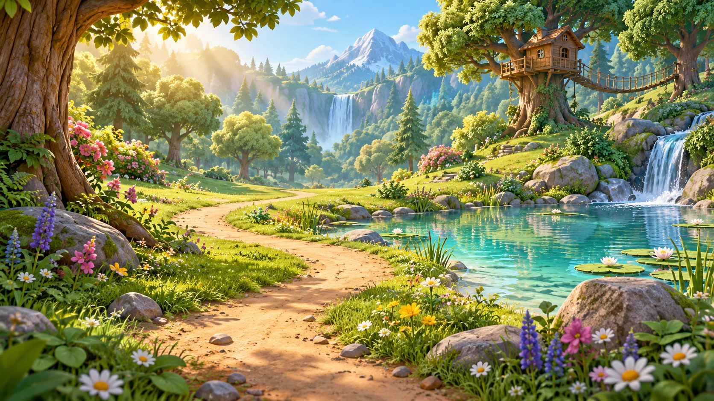

ACHT BUCHSTABEN · EIN WALD VOLLER GESCHICHTEN
Ein kleiner Anfang.
Ein großer Weg.
Entdecke die Buchstaben im Wald.
Hören, finden und mit dem Finger schreiben.
Im Querformat siehst du mehr vom Wald.
Dein Weg geht hier weiter.
✦✧ 0/3
Tippe auf den Weg · Wische, um dich umzusehen
TAROS WUNSCHZETTELLIMOWas steht hier?
Für wen ist die Post?
✦
DIESE POST IST FÜRDu hast Zeit.
✦
Schau, so sehen die beiden aus.
✦
Dein Buchstabe leuchtet!
Dein Buchstabenpfad
Tippe auf einen offenen Buchstaben. Du kannst ihn noch einmal entdecken.
DIE ERSTE STERNENPOST
✧ ✦ ✧
Ein Licht
für Oma.
Die Post ist angekommen.
Und im Baumhaus wird es hell.
Der Geschichtenwald erwacht …